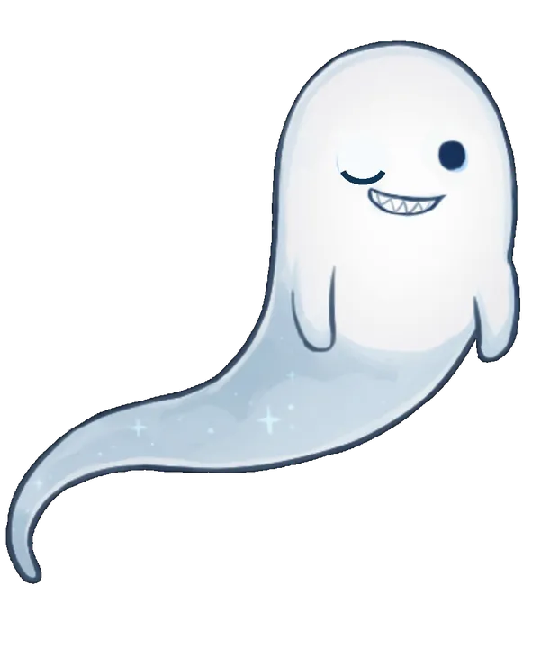

🌙 サイトの世界観
幽霊ちゃんとたぬちゃんは、柚胡椒の秘密基地を案内するオリジナルキャラクターです。
Twitch配信、Discord、X、YouTubeへの導線を、秘密基地らしい紫ネオンの雰囲気で案内します。
- SECRET BASE MASCOTS -
サイトを案内してくれる、ゆるい住人たち。
幽霊ちゃんとたぬちゃんは、柚胡椒の秘密基地を案内するオリジナルキャラクターです。
Twitch配信、Discord、X、YouTubeへの導線を、秘密基地らしい紫ネオンの雰囲気で案内します。


秘密基地の案内役。夜になると元気で、来てくれた人をふわっと案内します。


秘密基地ののんびり担当。Discordによくいて、たまに寝ています。